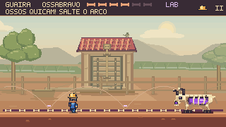
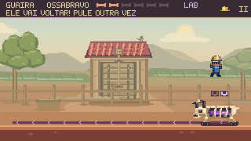
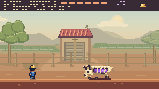
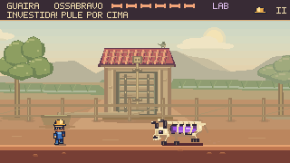
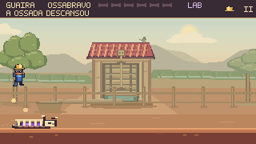
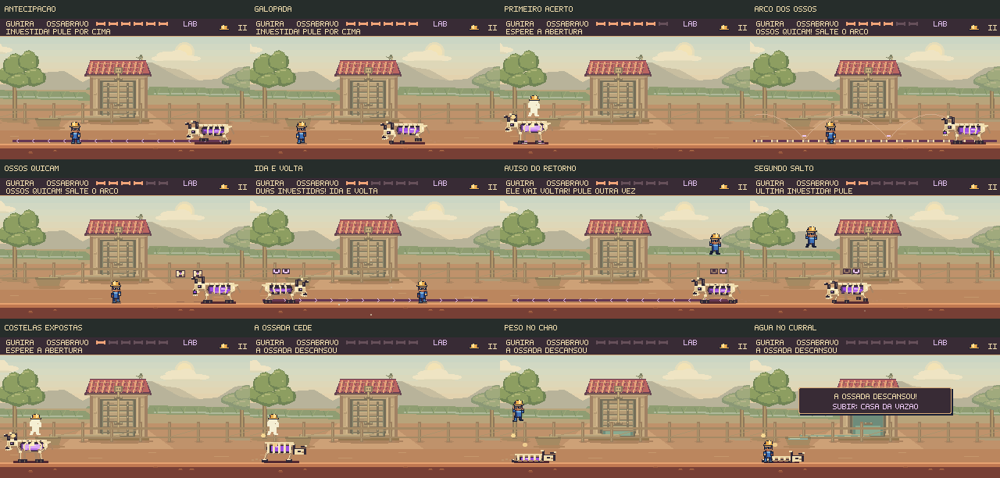

O Ossabravo muda o ritmo da luta.
Investidas para aprender a travessia, ossos que quicam para exigir leitura da trajetória e uma ida e volta na etapa final. O curral ganhou acabamento, e a ossada agora perde o apoio e se acomoda antes da mensagem de vitória.
As três etapas em movimento
Partida de 21,12 s, a 60 fps, com controles e física nativos, sem áudio. São seis acertos sem perder o capacete. Esta é uma execução ensaiada; aprender a luta pode exigir outras tentativas.
Aprender e combinar. As investidas iniciais ensinam a passar por cima e alcançar as costelas na frenagem. Na etapa intermediária, os ossos descrevem arcos e voltam ao chão. No final, a investida atravessa o curral e retorna.
Uma abertura que se pode reconhecer. No retorno, as costelas permanecem fechadas. O chefe para, muda a postura e anuncia a segunda passagem. Só depois dela vem a frenagem vulnerável, com o núcleo exposto e a indicação de ataque.
Avisos ligados ao que realmente acontece


A pista continua livre para correr, saltar e reposicionar Feka. A dificuldade vem de ler a trajetória e preparar o contra-ataque. O aviso do retorno dura 0,7 s, e a abertura depois da frenagem oferece 1,2 s.
O mesmo instante no curral


A casa da comporta ganhou telhas, madeira, juntas, guias, eixo e ferragens. Um canal contínuo liga a saída ao cocho. São elementos de fundo, atrás da cerca; as bordas do espaço de combate continuam claras.
Peso no movimento. O retorno tem três poses de preparação, a corrida levanta poeira discreta e pequenas fraturas acompanham os acertos. Os ossos quicantes têm brilho e sombra próprios.
Uma conclusão no cenário. Joelhos cedem, costelas descem e o crânio repousa em seis poses. A pequena comporta do curral se abre e abastece o cocho. A água do bairro continua sendo o objetivo da Casa da Vazão.

Ver o contra-ataque com sentada
Execução completa de 20,85 s. A sentada alcança a abertura antes da descida natural do salto.
Ver a versão anterior da luta
Gravação de 17,75 s, feita antes das alterações. O código e o percurso anteriores estão preservados nesta revisão.
Examinar doze momentos da nova luta

Conferência
As duas rotas foram concluídas no navegador com teclado e toque simulado. Pausa, movimento reduzido, reinício, avisos sonoros e progressão pelo capítulo também foram conferidos.
Os testes demonstram alternativas executáveis e a correspondência entre os avisos e os ataques. A descoberta das estratégias e o equilíbrio da dificuldade ainda precisam de avaliação com jogadores novos.
Resultados e arquivos · Partidas completas · Navegador e controles · Reprodução